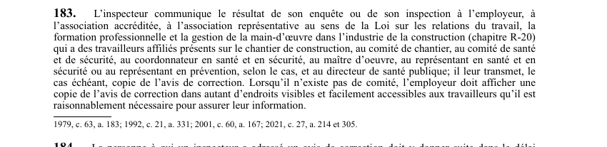

art-183-LSST : communication du résultat d'inspection
Un article du wiki ⚖️ Recueil législatif
En bref
Diffusion obligatoire des constats : l'inspecteur rend son résultat à toutes les parties concernées, et l'employeur prend le relais par affichage là où il n'y a pas de comité.
- L'inspecteur communique le résultat de son enquête ou de son inspection, jamais au seul employeur.
- Destinataires en établissement : employeur, association accréditée, comité de santé et de sécurité, représentant en santé et en sécurité ou représentant en prévention selon le cas, et directeur de santé publique.
- Destinataires propres au chantier : association représentative ayant des travailleurs affiliés présents sur le chantier (Loi R-20), comité de chantier, coordonnateur en santé et en sécurité, maître d'oeuvre.
- Copie de l'avis de correction leur est transmise, le cas échéant.
- Absence de comité : l'employeur doit afficher une copie de l'avis en autant d'endroits visibles et facilement accessibles qu'il est raisonnablement nécessaire pour informer les travailleurs.
🌐 LegisQuébec · 📄 PDF officiel (page 54)
Texte officiel : capture du PDF
{kind=link}

Toucher l'image pour l'agrandir🔗 Ouvrir a cette page : LSST.pdf : page 54 · texte a jour au 26 mars 2024
Voir aussi
- art. 181 : avis avant inspection · obligation : à son arrivée sur un lieu de travail, l'inspecteur doit prendre les mesures raisonnables pour aviser l'employeur, l'association accréditée et le représentant à la prévention ; sur un chantier, il avise le maître d'oeuvre, le coordonnateur et le représentant en santé.
- art. 182 : avis de correction inspecteur · faculté : l'inspecteur peut émettre un avis de correction enjoignant une personne de se conformer à la présente loi ou aux règlements et fixer un délai pour y parvenir.
- art. 184 : suite donnée avis correction · obligation : la personne qui reçoit un avis de correction doit y donner suite dans le délai imparti et informer dans les plus brefs délais l'association accréditée, le comité de santé et de sécurité, le représentant en santé et en sécurité ou le représentant en prévention.
- art. 185 : interdiction entraver inspecteur · interdiction : il est interdit d'entraver un inspecteur dans l'exercice de ses fonctions, de le tromper par des réticences ou des déclarations fausses ou mensongères, de refuser de lui déclarer ses nom et adresse, ou de négliger d'obéir à un ordre qu'il peut donner.
- 🔧 Modifié par : LMRSST · Article modificateur de la LMRSST.
- ↑ Loi : LSST
Pages qui pointent ici (12)
- art-181-LSST : avis d'arrivée de l'inspecteur Recueil législatif
- art-182-LSST : avis de correction de l'inspecteur Recueil législatif
- art-184-LSST : suite à donner à l'avis de correction Recueil législatif
- art-185-LSST : entrave à l'inspecteur interdite Recueil législatif
- art-186-LSST : suspension des travaux ou fermeture du lieu Recueil législatif
- art-189-LSST : reprise des travaux sur autorisation de l'inspecteur Recueil législatif
- art-190-LSST : ordre de cessation, scellés et confiscation Recueil législatif
- art-214-LMRSST : modifie l'art. 183 LSST Recueil législatif
- LMRSST : Chapitre II : Modifications à la LSST Recueil législatif
- LSST : Chapitre VII : Inspecteur de la CNESST et révision Recueil législatif
- LSST, programmes et inspecteur Droit du travail
- PDFs de jurisprudence et de doctrine Recueil législatif